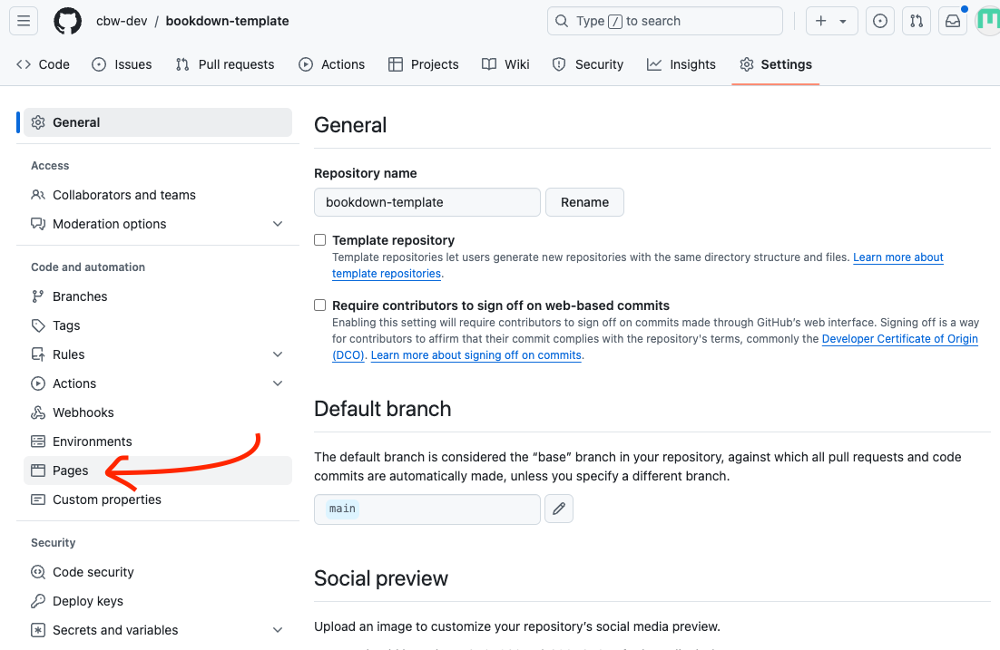
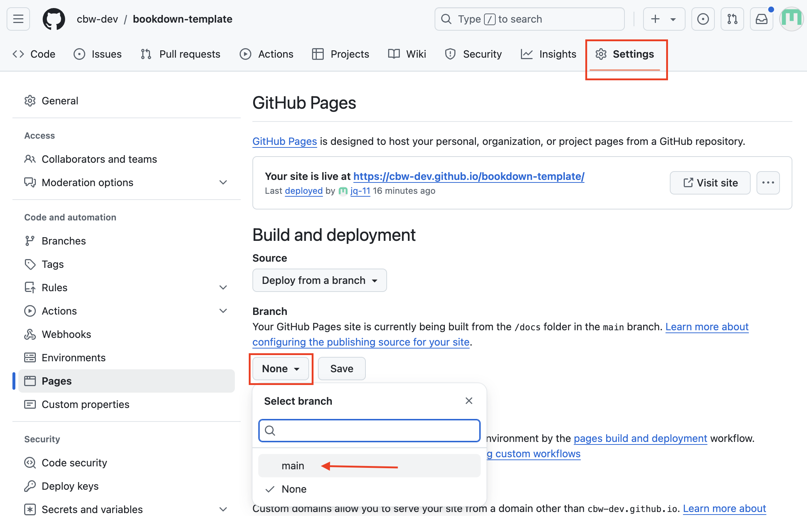
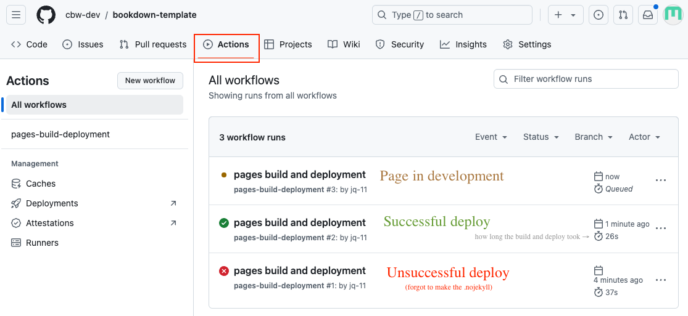
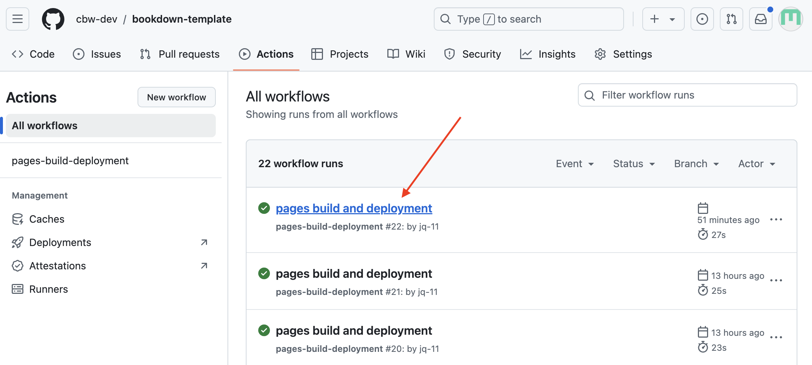
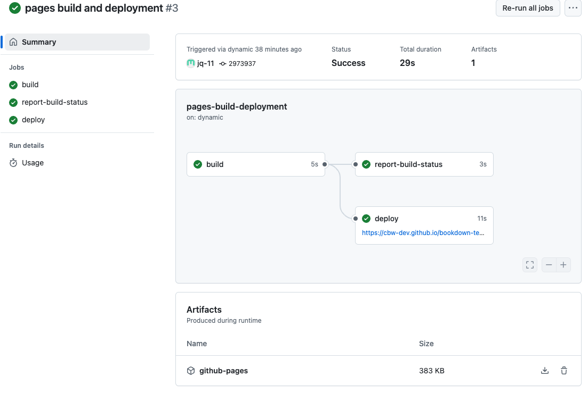
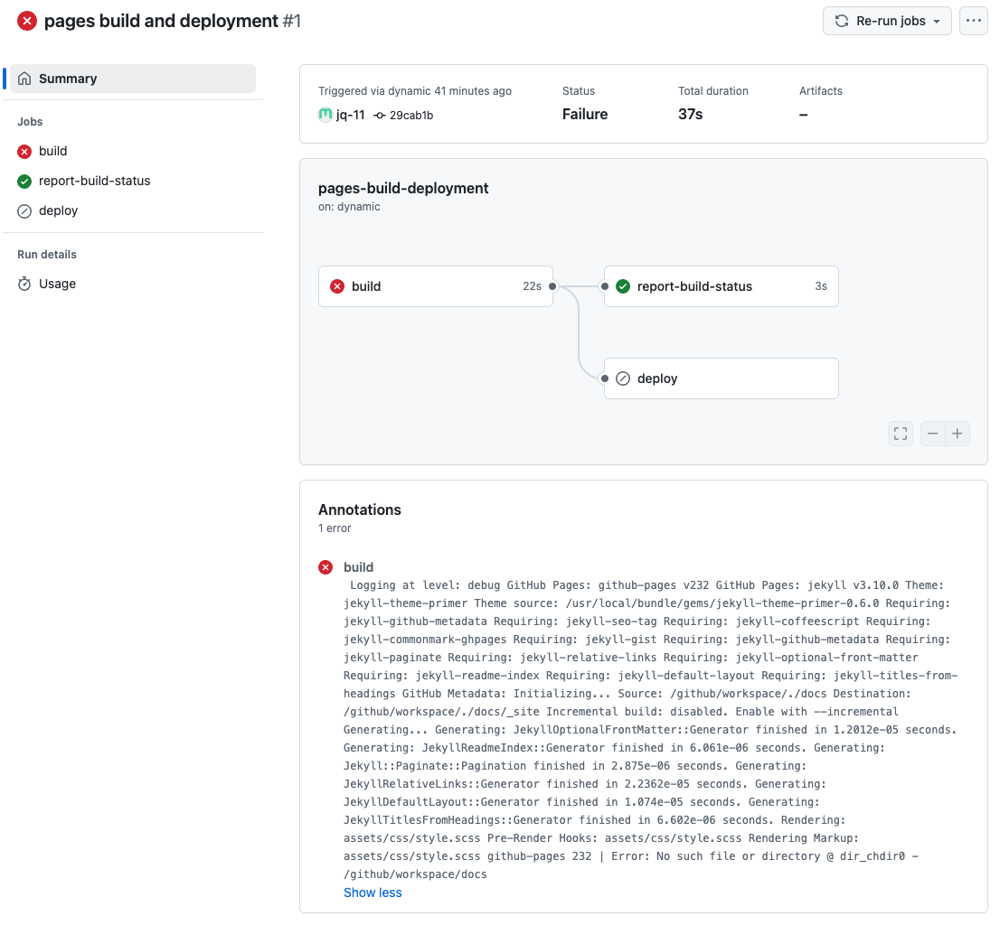
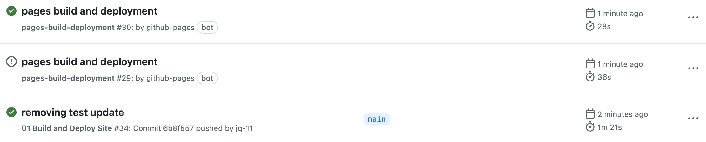

How to Deploy Your Website#
Wait, Let’s Recap#
You currently have all the files we need to build and develop your website (all included in the basic workshop template), locally on your own laptop (since we git cloned!). Since you know how to git pull, git add, git commit and git push, we can update our GitHub repository to hold edits to our workshop.
Our template is even ready to preview! Let’s look at how your website would look, using our local files.
How to Preview Your Website#
Navigate to the folder containing your project folder (the folder that you git cloned) in Terminal.
Alternatively, …
Navigate to your project folder in Terminal. Then, run
cd ..in terminal. Now you are in the folder containing your project folder (the parent folder)!Run the following command:
CHANGE “workshop-name” TO YOUR WORKSHOP NAME
For example, if my workshop is called AUR_2024, I would run
jupyter-book build --all AUR_2024jupyter-book build --all workshop-name
You can also use the shortened verison of “jupyter-book” and run the following command instead!
jb build --all workshop-name
Tip
When you are continuously previewing your workshop, you will be continuously running this command in terminal. Recall that hitting the [↑] arrow key reenters your previous command, so it’s ready for you to run!
This command builds your entire website, from all your source files. You can see the files being generated in the _build/html folder in your project’s folder (you will never have to edit these files, these are auto-generated by Jupyter Book).
Tip
If you only want to rebuild edited files, you can run this command:
jb build workshop-name.This will render much faster, since we’re not rebuilding from all our source files. However, to ensure there are no faulty links, it is best to build from all source files before git pushing and deploying.
As it builds, it will output helpful debugging messages. If there is a mistake in your project/code, warning and error messages will result.
Note
Warning messages are just warnings, despite being written in red text. Your website will still build properly, unless an actual error occurs.
Once Jupyter Book is done building, you will see this a message, similar to the one given below:
=============================================================================== Finished generating HTML for book. Your book's HTML pages are here: jupyterbook-docs/_build/html/ You can look at your book by opening this file in a browser: jupyterbook-docs/_build/html/index.html Or paste this line directly into your browser bar: file:///Users/jqiu/Documents/CBWgithub/cbw-dev-templates-docs/jupyterbook-docs/_build/html/index.html ===============================================================================
Essentially, Jupyter Book has converted all our files into HTML files. These HTML files makeup our website! Jupyter Book is telling us:
where our HTML files are stored (our above message says:
jupyterbook-docs/_build/html/)which file to open in our browser, to preview website (our above message says:
jupyterbook-docs/_build/html/index.html)what exactly to copy paste into our browser, to preview our website (our above message says:
file:///Users/jqiu/Documents/CBWgithub/cbw-dev-templates-docs/jupyterbook-docs/_build/html/index.html)
Copy paste the last option (of your output) into a browser of your choice and see your website, from our local files!
GitHub Pages and gh-pages#
Now, we have a website, locally, in our workshop-name/_build/html folder.
CBW uses GitHub Pages to host our workshop websites. GitHub we can tell GitHub to look at our _build/html folder and generate a website like the one we have been previewing!
We will be telling GitHub to look at a specific branch, the gh-pages branch. We will be specifically updating this branch with our HTML files, and then telling GitHub to look at this branch for the HTML files.
Note: We only need to tell GitHub to look at this branch once. The steps to do this are included: Steps for Your First Deploy.
Distinction
GitHub (ex. cbw-dev/jupyterbook-template) holds your repo, which has version control for all your files!
The deployed website (ex. https://cbw-dev.github.io/jupyterbook-template/) hosts the workshop website online.
Deploy Command#
This command deploys your website. Everytime you want to update the live website, you must run this command. Simply git pushing is not enough, since GitHub Pages is looking at the gh-pages branch, and not just your main repository.
You must run this command within your project folder, like all other git commands.
ghp-import -n -p -f _build/html
BEWARE!
When you preview your website, you run jb build --all workshop-name in the parent folder of your project folder.
When you git add, commit & push and deploy, you are running your commands in your project folder.
Steps for Your First Deploy#
Note
Run ghp-import -n -p -f _build/html in Terminal before you follow these steps.
In the top navigation bar, select Settings.

Then, go to the Pages sidebar option. 
“Deploy from a branch” is already selected, which is what we want. We must change the branch from “none” to “gh-pages”. Select the “None” dropdown button and select “gh-pages”. 
You can leave the second toggle option as
/ (root). Great! Now we’re waiting on the page to deploy, which should take less than a minute.
Check Your Deploy and See your Website!#
To see updates, go to the Actions page (found along the top navigation bar). This will help you understand how the deploy is working, and if it succeeded or failed.

You can click pages build and deployment for updates.

A successful deploy will have a green checkmark next to it. You can inspect the 3 steps: build, report-build-status, deploy. Once it’s done deploying, you can find the website at the link provided under the “deploy” step!

A failed deploy will have a red cross next to it. Clicking through the steps can help you determine what went wrong in the deploy.
Warning
A website can build properly, but may not deploy properly! It is a good idea to check after making big changes.

A Very Specific Build and Deployment Warning#

This is a very specific (and unlikely) warning. It occurs when 1 deploy hasn’t finished, but another deploy began. THIS IS NOT A CONCERN. This is a warning message you do not have to worry about!